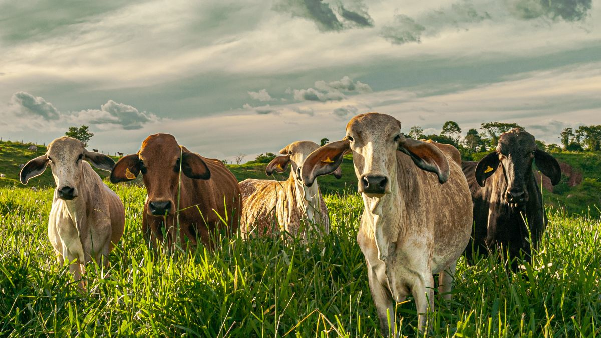

Boi gordo engorda
Publicado em: 20 de fevereiro de 2025
O boi gordo está mais gordo, logo seu preço subiu! Em um giro surpreendente no mercado, o boi gordo, aquele famoso ícone do agronegócio, decidiu ganhar alguns quilos extras. O resultado? Seu preço disparou, deixando os pecuaristas e os economistas de cabelo em pé. "Quem diria que a dieta dele ia influenciar tanto na economia!", comentou um analista financeiro, visivelmente impressionado. "Não estava nos planos, mas o boi decidiu se alimentar melhor, e agora está tão gordo quanto meu portfólio de ações", disse um investidor, que viu suas finanças se derreterem junto com o aumento do preço do boi. O aumento de peso do animal levou a uma alta inesperada nos preços do mercado. "Está tão grande que se ele continuar assim, vai ter que começar a pagar uma taxa extra de bagagem no aeroporto", brincou outro economista.
O boi, agora conhecido como o "boi da inflação", foi visto sendo paparicado pelos produtores rurais. "Ele está comendo tão bem que não podemos nem chamar de 'boi' mais. É praticamente uma ‘vaca premium’", disse um fazendeiro que, evidentemente, não estava mais contando os lucros, mas os quilos. Os analistas, por sua vez, começaram a questionar: "Será que agora o mercado de carne vai engordar mais rápido que o boi? Ou será que ele está só preparando o terreno para um aumento de preço em todas as carnes?" O fato é que o boi, que já era famoso por ser o "chefe" do mercado de carne, agora é o verdadeiro protagonista de uma economia que está... cada vez mais pesada! "Não adianta, o boi agora é um ‘influencer’ da economia. Vai ter que criar um canal no YouTube para dar dicas de como engordar e aumentar os lucros", finalizou o analista, rindo e já pensando em mais um aumento de preço.